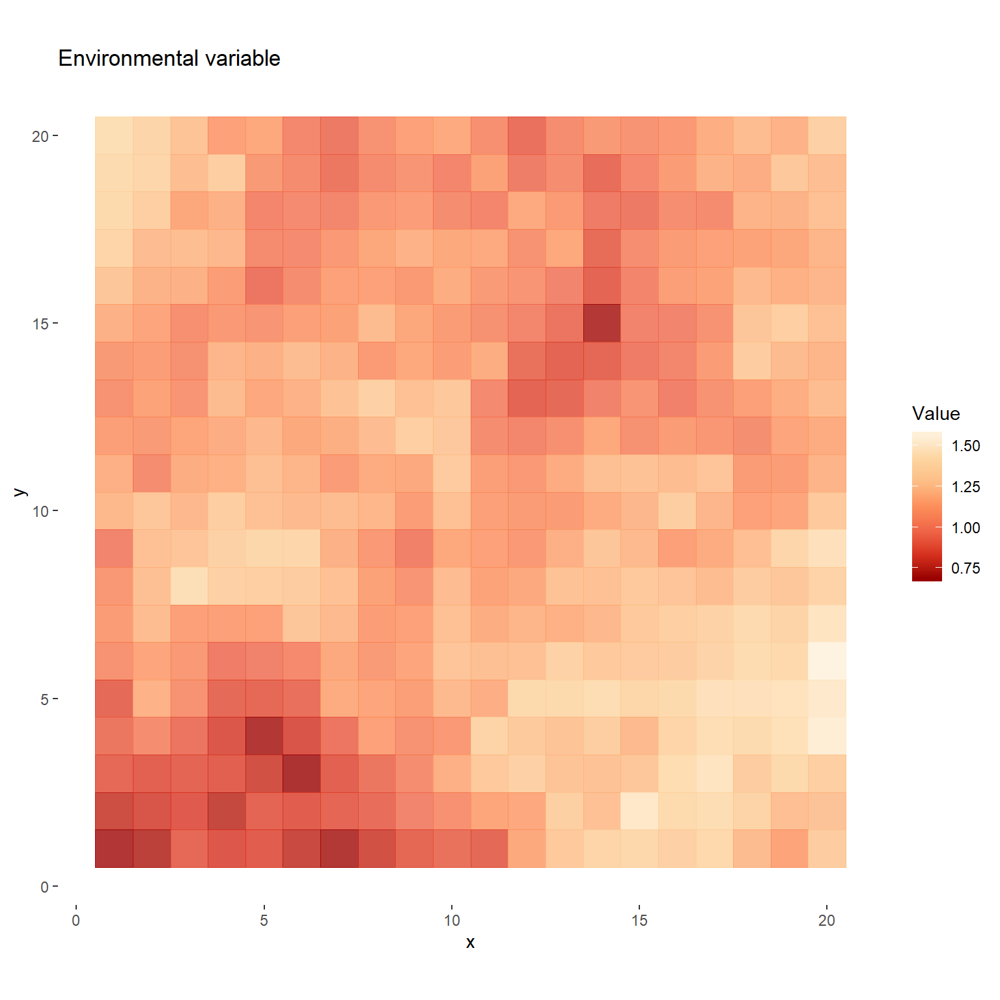
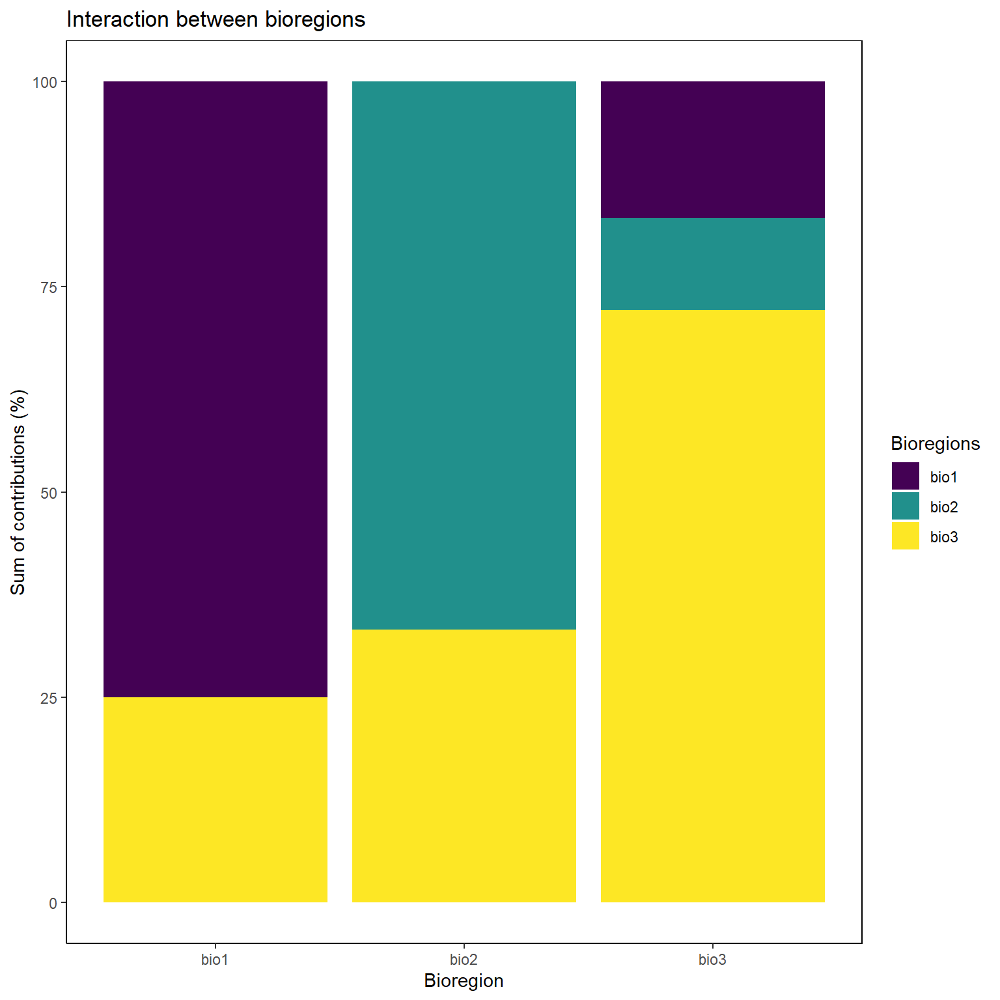
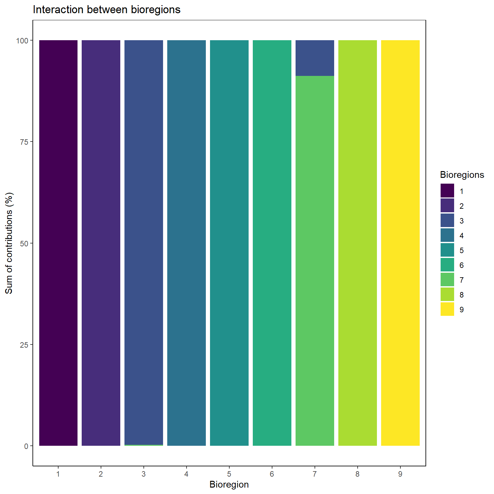
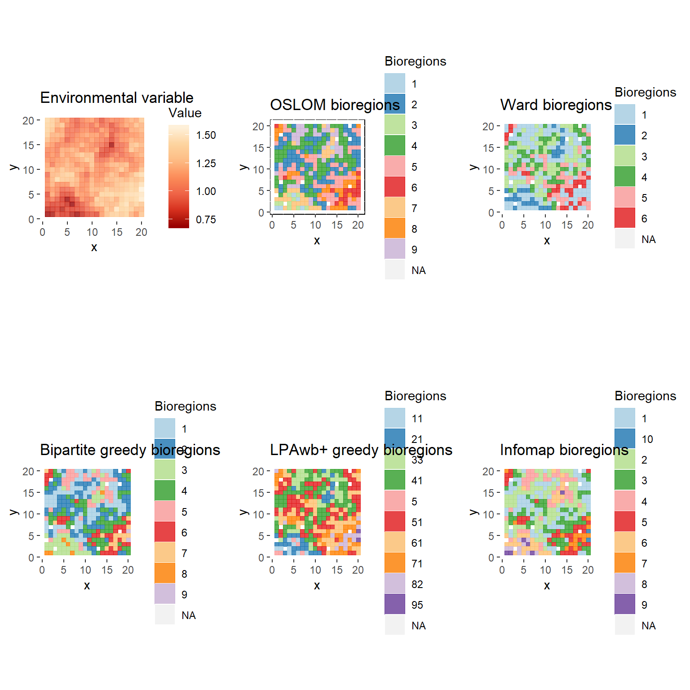
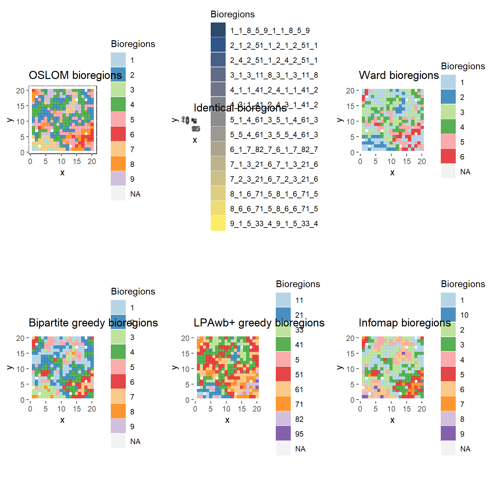

Tutorial
Pierre Denelle
2020-03-03
tutorial.RmdThe principle of the package is illustrated by the following figure.
In the following vignette, we show how bioRgeo package works. We use simulated datasets to illustrate how we can detect communities using various methods, ranging from bipartite network modularity to classical clustering.
From these segregations, we show how different maps can be compared.
Virtual dataset
virtual_sp is a dataset simulated that comes with the package. This dataset relies on the response curve of virtual species to a virtual raster. The virtual raster contains 10000 cells and was simulated using gstat R package. See here for details.
Each site having XY coordinates, we can plot the raster of the virtual environment layer:
# Import virtual dataset
data("virtual_sp")
# Only species data.frame
sp_df <- virtual[[1]]
# Plot of environmental values
sp_df %>%
distinct(site, .keep_all = TRUE) %>%
ggplot(aes(x, y)) +
geom_tile(aes(fill = env, color = env),
alpha = 0.8, width = 1, height = 1) +
scale_color_distiller("Value", palette = "OrRd") +
scale_fill_distiller("Value", palette = "OrRd") +
coord_equal() +
labs(title = "Environmental variable") +
theme(panel.background = element_rect(fill = "transparent", colour = NA))
Based on this raster, we used virtualspecies R package (Leroy et al. 2015) to simulate a Gaussian response curve of 100 virtual species. The mean and standard deviation of the response function varied among species, drawing a continuum of generalist and specialist species.
We here illustrate two contrasted response curves:
For every species in every cell, we could derive a suitability index. Species with suitability index inferior to 0.15 were arbitrarily set absent.
Inputs of the package
bioRgeo R package relies on two possible inputs as illustrated in the following figure. Several functions of the package necessitate to define the structure of the input. User can switch from one input or the other using either contingency() or contingency_to_dataframe() functions.

In our case, we can easily convert the input data.frame into a contingency table, using the contingency() function:
sp_mat <- contingency(sp_df[which(sp_df$pa != 0), ],
"site", "sp", ab = NULL, binary = TRUE)
knitr::kable(sp_mat[1:5, 1:5])| sp1 | sp2 | sp3 | sp4 | sp5 | |
|---|---|---|---|---|---|
| site1 | 1 | 1 | 1 | 1 | 1 |
| site10 | 0 | 0 | 0 | 0 | 0 |
| site100 | 0 | 0 | 0 | 0 | 0 |
| site101 | 0 | 0 | 0 | 0 | 0 |
| site102 | 0 | 0 | 0 | 0 | 0 |
# With weights
sp_mat_w <- contingency(sp_df, "site", "sp", ab = "suitab", binary = FALSE)
knitr::kable(sp_mat_w[1:5, 1:5])| sp1 | sp2 | sp3 | sp4 | sp5 | |
|---|---|---|---|---|---|
| site1 | 0.9158657 | 0.9312874 | 0.9428647 | 0.9517664 | 0.9587522 |
| site10 | 0.0000000 | 0.0000000 | 0.0000000 | 0.0000000 | 0.0000000 |
| site100 | 0.0000000 | 0.0000000 | 0.0000000 | 0.0000000 | 0.0000000 |
| site101 | 0.0000000 | 0.0000000 | 0.0000000 | 0.0000000 | 0.0000000 |
| site102 | 0.0000000 | 0.0000000 | 0.0000000 | 0.0000000 | 0.0000000 |
Community detection
The core of the package relies on the aggregation of several methods that perform community detection based on distinct methods.
Bipartite networks
Networks are called bipartite when they are constituted by two types of nodes. Each type of node can only be linked with the other type. For example, if species occur in sites, sites and species constitute two types of nodes and an occurrence of a species within a site describes a link between these two nodes.
igraph
Several algorithms to detect community within bipartite networks. Several of them are implemented within the igraph package.
# With fastgreedy
bip <- algo_bipartite(dat = sp_mat, algo = "greedy", weight = FALSE)
# fastgreedy, input data frame
bip_df <- algo_bipartite(dat = sp_df[which(sp_df$pa > 0), ],
algo = "greedy",
weight = FALSE, input = "data frame", site = "site",
sp = "sp", ab = NULL)
table(bip$module); table(bip_df$module)##
## 1 2 3 4 5 6 7 8 9
## 98 101 61 78 53 46 25 16 12##
## 1 10 2 3 4 5 6 7 8 9
## 101 12 99 42 78 52 19 46 25 16# With Beckett algorithm
bip2 <- algo_bipartite(dat = sp_mat, algo = "LPAwb", weight = FALSE)
# With Infomap
bip_infomap <- algo_bipartite(dat = sp_mat, algo = "infomap", weight = FALSE)
# Only sites
bip_site <- bip %>%
filter(cat == "site") %>%
rename(site = node) %>%
dplyr::select(site, module)
bip_site2 <- bip2 %>%
filter(cat == "site") %>%
rename(site = node) %>%
dplyr::select(site, module)
bip_site_infomap <- bip_infomap %>%
filter(cat == "site") %>%
rename(site = node) %>%
dplyr::select(site, module)Infomap
db <- data.frame(sites = c("site1", "site1", "site2", "site2"),
species = c("A", "B", "A", "C"),
abundance = c(5, 2, 7, 1))
po=writePajek(db = db, site.field = "sites", species.field = "species",
filename = "pajektest.net")
writePajek <- function(db, site.field = 1, species.field = 2, filename, abundance.field = NULL){
if(!is.factor(db[, species.field])){
db[, species.field] <- as.factor(db[, species.field])
}
if(!is.factor(db[, site.field])){
db[, site.field] <- as.factor(db[, site.field])
}
species <- data.frame(sp = levels(db[, species.field]),
id = 1:length(levels(db[, species.field])))
sites <- data.frame(site = levels(db[, site.field]),
id = length(levels(db[, species.field])) +
1:length(levels(db[, site.field])))
links <- data.frame(from = species$id[match(db[, species.field], species$sp)],
to = sites$id[match(db[, site.field], sites$site)],
weight = ifelse(rep(length(abundance.field), nrow(db)),
db[, abundance.field],
rep(1, nrow(db))))
cat(paste("*Vertices ", max(sites$id), "\n",
paste(species$id, ' "', species$sp, '"', sep = "",
collapse = "\n"), "\n",
paste(sites$id, ' "', sites$site, '"', sep = "", collapse = "\n"),
"\n", "*Edges\n",
paste(apply(links, 1, paste, collapse = " "), collapse = "\n"),
sep = ""), file = filename)
}
writePajek(fish,
site.field = "X1.Basin.Name", # Name of your site column
species.field = "X6.Fishbase.Valid.Species.Name", # Name of your species column
filename = "fish.net", # Name of the output file
abundance.field = NULL)
Bio_dir <- list.dirs(.libPaths(), recursive = FALSE)
Bio_dir <- Bio_dir[grep("bioRgeo", Bio_dir)]
Bio_dir <- "D:/Irstea/CarHab/Bioregionalization_extra/bin/INFOMAP/"
# Change working directory so the file is saved in the proper place
current_path <- getwd()
setwd(Bio_dir)
# Convert dat to Pajek format (readable by Infomap)
if(!is.factor(dat[, sp])){
dat[, sp] <- as.factor(dat[, sp])
}
if(!is.factor(dat[, site])){
dat[, site] <- as.factor(dat[, site])
}
species <- data.frame(sp = levels(dat[, sp]),
id = 1:length(levels(dat[, sp])))
sites <- data.frame(site = levels(dat[, site]),
id = length(levels(dat[, sp])) +
1:length(levels(dat[, site])))
links <- data.frame(from = species$id[match(dat[, sp], species$sp)],
to = sites$id[match(dat[, site], sites$site)],
weight = ifelse(rep(length(ab), nrow(dat)),
dat[, ab],
rep(1, nrow(dat))))
cat(paste0("*Vertices ", max(sites$id), "\n",
paste0(species$id, ' "', species$sp, '"', collapse = "\n"), "\n",
paste0(sites$id, ' "', sites$site, '"', collapse = "\n"),
"\n", "*Edges\n",
paste(apply(links, 1, paste, collapse = " "), collapse = "\n")),
file = "dat_Pajek.net")
# Set up the command with required parameters
cmd <-
paste0(Bio_dir,
"Infomap_win -N 10 --undirected --two-level --map --clu --tree
--markov-time 0.5 test_uni_inf.txt test")
system(command = cmd)Projected networks
A projected network considers the similarity between each pair of nodes. In our case, nodes can represent different sites that are linked together according the proportion of species they share together.
Projection of the network
To project the network, we can use the project_network() function.
sp_proj <- project_network(sp_mat, similarity = "simpson")
sp_proj <- sp_proj[, c("id1", "id2", "simpson")]
knitr::kable(head(sp_proj))| id1 | id2 | simpson |
|---|---|---|
| 4 | 6 | 1.0000000 |
| 7 | 8 | 1.0000000 |
| 7 | 9 | 0.8571429 |
| 8 | 9 | 1.0000000 |
| 5 | 10 | 0.6666667 |
| 4 | 11 | 1.0000000 |
# With data frame input
sp_proj_df <- project_network(sp_df[which(sp_df$pa != 0), ],
similarity = "simpson", input = "data frame",
site = "site", sp = "sp")
sp_proj_df <- sp_proj_df[, c("id1", "id2", "simpson")]
knitr::kable(head(sp_proj_df))| id1 | id2 | simpson |
|---|---|---|
| 4 | 6 | 1.0000000 |
| 7 | 8 | 1.0000000 |
| 7 | 9 | 0.8571429 |
| 8 | 9 | 1.0000000 |
| 5 | 10 | 0.6666667 |
| 4 | 11 | 1.0000000 |
# Bray-Curtis dissimilarity can take into account abundances of species
sp_proj_w <- project_network(sp_mat_w, similarity = "bray")
sp_proj_w <- sp_proj_w[, c("id1", "id2", "bray")]
knitr::kable(head(sp_proj_w))| id1 | id2 | bray | |
|---|---|---|---|
| 2 | 2 | 1 | 0.0162964 |
| 3 | 3 | 1 | 0.0000000 |
| 4 | 4 | 1 | 0.0005101 |
| 5 | 5 | 1 | 0.0000020 |
| 6 | 6 | 1 | 0.0002640 |
| 7 | 7 | 1 | 0.0016733 |
Order Statistics Local Optimization Method (OSLOM)
Running OSLOM. tp files containing the modularity results are directly stored within the virtual dataset, but the following chunk can be run independently.
Output of OSLOM are stored in a chosen directory and can be import into R with the command readRDS().
Code compiled, original from here. Lancichinetti et al. (2011)
run_oslom(sp_proj, n_runs = 5, t_param = 0.1, cp_param = 0.5,
saving_directory = "D:/Irstea/CarHab/Bioregionalization_extra")
res <- readRDS("D:/Irstea/CarHab/Bioregionalization_extra/tp.rds")
file.rename("D:/Irstea/CarHab/Bioregionalization_extra/tp.rds",
"D:/Irstea/CarHab/Bioregionalization_extra/tp_binary.rds")
# With weights
run_oslom(sp_proj_w, n_runs = 5, t_param = 0.1, cp_param = 0.5,
saving_directory = "D:/Irstea/CarHab/Bioregionalization_extra/")
res_w <- readRDS("D:/Irstea/CarHab/Bioregionalization_extra/tp.rds")Converting the OSLOM .tp file into a list.
# Format OSLOM output into a data.frame
oslom_vignette <- oslom_output(virtual[[2]], sp_mat)
# With weights
oslom_vignette_w <- oslom_output(virtual[[3]], sp_mat_w)
print(paste0("Number of bioregions detected = ",
length(unique(oslom_vignette$bioregion)),
" ; and with weights: ",
length(unique(oslom_vignette_w$bioregion))))## [1] "Number of bioregions detected = 9 ; and with weights: 6"Clustering
Other methods to detect communities use more classical clustering approaches. For example, k-means clustering aims at partitionning n observations into k clusters in which each observation belongs to the cluster with the nearest mean.
Agglomerative Hierarchical Clustering.
See https://towardsdatascience.com/the-5-clustering-algorithms-data-scientists-need-to-know-a36d136ef68 to add more methods.
Species’ contributions
This part aims at evaluating the contributions of species to the different bioregions created.
tmp <- left_join(sp_df[which(sp_df$pa > 0), ], oslom_vignette, by = "site")
# table(tmp$sp, tmp$bioregion)
scores <- contribute(dat = tmp, sp_col = "sp", site_col = "site",
bioregion_col = "bioregion")The following figure illustrates how the rho score from Lenormand et al. 2019 is calculated.

\[ \rho_{ij} = \frac{n_{ij} - \frac{n_in_j}{n}}{\sqrt(\frac{n-n_j}{n-1}(1-\frac{n_j}{n})\frac{n_jn_i}{n})} \]
Formula of Cz scores:
\[ P_{i} = 1 - \sum_{i = 1}^{N_m}{(\frac{k_{is}}{k_{i}})^2} \]
where Pi is the participation coefficient of node i, kis is the number of links of node i to region s, ki is the total number of links of node i and Nm is the total number of regions. We calculated the participation coefficient at each level of the biogeographical structure identified by Map Equation.
\[ z_i = \frac{k_i - \overline{k_{si}}}{\sigma_{k_{si}}} \]
The within-module degree z-score measures how well-connected node i is to other nodes in the module.
Interaction between bioregions
Following the equation of the rho score from above.
The interactions between the different bioregions can then be calculated following these equations:
\[ \hat\rho_{ij}^{+} = {\rho_{ij}}_{\rho_{ij}>1.96} \] We normalize the rows:
\[ \hat\rho_{ij}^{+} = \frac{\rho_{ij}^{+}}{\sum_i\rho_{ij}^{+}} \]
Finally, we determine for each bioregion how each set of species contributes to it.
\[ \lambda_{jj'} = \frac{1}{|A_j|}\sum_{i \in A_{j}}\hat\rho_{jj'}^{+} \]
# 10 sites with species richness belonging to [1, 3]
set.seed(1)
sites <- sapply(paste0("site", seq(1:10)),
function(x) rep(x, sample(c(1:3), 1)))
# Pool of 5 species distributed across the sites
species <- lapply(sites,
function(x) sample(paste0("sp", seq(1:5)),
length(x), replace = TRUE))
# 3 bioregions assigned randomly
bioregions <- sample(paste0("bio", seq(1:3)), length(sites), replace = TRUE)
bioregions <- data.frame(site = names(sites),
bioregion = bioregions)
# Conversion to data frame
fuzzy <- data.frame(site = as.character(unlist(sites)),
sp = as.character(unlist(species)))
fuzzy <- left_join(fuzzy, bioregions, by = "site")
table(fuzzy$sp, fuzzy$bioregion)##
## bio1 bio2 bio3
## sp1 2 2 2
## sp2 1 2 2
## sp3 0 1 1
## sp4 1 0 1
## sp5 1 4 1# Compute zscores
zscores <- zscore(fuzzy, sp_col = "sp", site_col = "site",
bioregion_col = "bioregion", output_format = "matrix")
zscores## bioregion
## sp bio1 bio2 bio3
## sp1 0.2020305 -0.4082483 0.2020305
## sp2 -0.5532833 0.0000000 0.5532833
## sp3 -1.0497813 0.3535534 0.6998542
## sp4 0.6998542 -1.4142136 0.6998542
## sp5 -0.8081220 1.6329932 -0.8081220# Interactions between bioregions
interact(input_network = "projected",
dat = zscores, plot = TRUE, output_format = "matrix")## $lambda
## bio1 bio2 bio3
## bio1 75.00000 0.00000 25.00000
## bio2 0.00000 66.78141 33.21859
## bio3 16.66667 11.18761 72.14572
##
## [[2]]
# tmp <- left_join(sp_df, oslom_vignette, by = "site")
tmp <- left_join(sp_df[which(sp_df$pa > 0), ], oslom_vignette, by = "site")
# table(tmp$sp, tmp$bioregion)
z_scores <- zscore(tmp, sp_col = "sp", site_col = "site",
bioregion_col = "bioregion", output_format = "dataframe")
top10 <- z_scores %>%
group_by(bioregion) %>%
top_n(n = 10, zscore) %>% # extract top 10
mutate(rank = rank(-zscore, # ranking zcore in an ascending order
ties.method = "first")) %>% # if tie zscore, first species
dplyr::select(sp, bioregion, zscore, rank) %>%
mutate(zscore = round(zscore, 1)) %>% # rounding zscore to 1 digit
as.data.frame()
knitr::kable(top10[which(top10$bioregion == "2"), ])| sp | bioregion | zscore | rank | |
|---|---|---|---|---|
| 11 | sp51 | 2 | 13.5 | 10 |
| 12 | sp52 | 2 | 13.8 | 9 |
| 13 | sp53 | 2 | 15.2 | 8 |
| 14 | sp54 | 2 | 15.5 | 7 |
| 15 | sp55 | 2 | 16.3 | 6 |
| 16 | sp56 | 2 | 16.5 | 5 |
| 17 | sp57 | 2 | 17.1 | 4 |
| 18 | sp58 | 2 | 17.2 | 3 |
| 19 | sp59 | 2 | 18.8 | 1 |
| 20 | sp60 | 2 | 18.7 | 2 |
z_scores <- zscore(tmp, sp_col = "sp", site_col = "site",
bioregion_col = "bioregion", output_format = "matrix")
lambda <- interact(input_network = "projected",
dat = z_scores, plot = TRUE, output_format = "matrix")
knitr::kable(head(lambda[[1]]))| 1 | 2 | 3 | 4 | 5 | 6 | 7 | 8 | 9 |
|---|---|---|---|---|---|---|---|---|
| 100 | 0 | 0.00000 | 0 | 0 | 0 | 0.0000000 | 0 | 0 |
| 0 | 100 | 0.00000 | 0 | 0 | 0 | 0.0000000 | 0 | 0 |
| 0 | 0 | 99.72334 | 0 | 0 | 0 | 0.2766644 | 0 | 0 |
| 0 | 0 | 0.00000 | 100 | 0 | 0 | 0.0000000 | 0 | 0 |
| 0 | 0 | 0.00000 | 0 | 100 | 0 | 0.0000000 | 0 | 0 |
| 0 | 0 | 0.00000 | 0 | 0 | 100 | 0.0000000 | 0 | 0 |

Cz
Cz computation on bipartite results.
bip_cz <- bip[, c("node", "module", "cat")]
colnames(bip_cz) <- c("node", "mod", "cat")
cz_bip <- cz(dat = sp_df[which(sp_df$pa > 0), ], sp_col = "sp",
site_col = "site", bip = bip_cz, ab = NULL)
head(cz_bip[[1]])## node mod cat C n_link_mod mean_link_mod sd_link_mod z
## 1 site1 8 site 0 10 6.37500 2.362908 1.5341267
## 2 site10 3 site 0 7 10.52459 7.152171 -0.4928000
## 3 site100 7 site 0 3 7.92000 3.581434 -1.3737516
## 4 site101 1 site 0 6 12.59184 17.519848 -0.3762496
## 5 site102 2 site 0 3 12.51485 17.654809 -0.5389382
## 6 site103 1 site 0 10 12.59184 17.519848 -0.1479372Comparison of different bioregionalizations
If sites have coordinates, we can apply several functions to compare how the distinct bioregions are segregated through space.
Projection on a map.
plot_grid(
# Plot of environmental values
sp_df %>%
distinct(site, .keep_all = TRUE) %>%
ggplot(aes(x, y)) +
geom_tile(aes(fill = env, color = env),
alpha = 0.8, width = 1, height = 1) +
scale_color_distiller("Value", palette = "OrRd") +
scale_fill_distiller("Value", palette = "OrRd") +
coord_equal() +
labs(title = "Environmental variable") +
theme(panel.background = element_rect(fill = "transparent",colour = NA)),
# Plot of OSLOM bioregions
sp_df %>%
left_join(oslom_vignette, by = "site") %>%
distinct(site, .keep_all = TRUE) %>%
ggplot(aes(x, y)) +
geom_tile(aes(fill = as.factor(bioregion), color = as.factor(bioregion)),
alpha = 0.8, width = 1, height = 1) +
scale_color_brewer("Bioregions", palette = "Paired") +
scale_fill_brewer("Bioregions", palette = "Paired") +
# scale_color_viridis_d("Bioregions", option = "E") +
# scale_fill_viridis_d("Bioregions", option = "E") +
coord_equal() +
labs(title = "OSLOM bioregions") +
theme(panel.background = element_rect(fill = "transparent",
colour = "black")),
# Plot of Ward bioregions
sp_df %>%
left_join(ward_res, by = "site") %>%
distinct(site, .keep_all = TRUE) %>%
ggplot(aes(x, y)) +
geom_tile(aes(fill = as.factor(cluster), color = as.factor(cluster)),
alpha = 0.8, width = 1, height = 1) +
scale_color_brewer("Bioregions", palette = "Paired") +
scale_fill_brewer("Bioregions", palette = "Paired") +
coord_equal() +
labs(title = "Ward bioregions") +
theme(panel.background = element_rect(fill = "transparent", colour = NA)),
# Plot of fastgreedy bioregions
sp_df %>%
left_join(bip_site, by = "site") %>%
distinct(site, .keep_all = TRUE) %>%
ggplot(aes(x, y)) +
geom_tile(aes(fill = as.factor(module), color = as.factor(module)),
alpha = 0.8, width = 1, height = 1) +
scale_color_brewer("Bioregions", palette = "Paired") +
scale_fill_brewer("Bioregions", palette = "Paired") +
coord_equal() +
labs(title = "Bipartite greedy bioregions") +
theme(panel.background = element_rect(fill = "transparent", colour = NA)),
# Plot of LPAwb bioregions
sp_df %>%
left_join(bip_site2, by = "site") %>%
distinct(site, .keep_all = TRUE) %>%
ggplot(aes(x, y)) +
geom_tile(aes(fill = as.factor(module), color = as.factor(module)),
alpha = 0.8, width = 1, height = 1) +
scale_color_brewer("Bioregions", palette = "Paired") +
scale_fill_brewer("Bioregions", palette = "Paired") +
coord_equal() +
labs(title = "LPAwb+ greedy bioregions") +
theme(panel.background = element_rect(fill = "transparent", colour = NA)),
# Plot of Infomap bioregions
sp_df %>%
left_join(bip_site_infomap, by = "site") %>%
distinct(site, .keep_all = TRUE) %>%
ggplot(aes(x, y)) +
geom_tile(aes(fill = as.factor(module), color = as.factor(module)),
alpha = 0.8, width = 1, height = 1) +
scale_color_brewer("Bioregions", palette = "Paired") +
scale_fill_brewer("Bioregions", palette = "Paired") +
coord_equal() +
labs(title = "Infomap bioregions") +
theme(panel.background = element_rect(fill = "transparent", colour = NA)),
nrow = 2)
Identical plots
# Gather all the bioregionalizations
all_bioregions <- sp_df %>%
select(site, x, y, env) %>%
distinct(site, .keep_all = TRUE) %>%
left_join(oslom_vignette, by = "site") %>% # add OSLOM
rename(oslom = bioregion) %>%
left_join(ward_res, by = "site") %>% # add Ward
rename(ward = cluster) %>%
left_join(bip_site, by = "site") %>% # add greedy
distinct(site, .keep_all = TRUE) %>%
rename(greedy = module) %>%
left_join(bip_site2, by = "site") %>% # add LPAwb
distinct(site, .keep_all = TRUE) %>%
rename(lpawb = module) %>%
left_join(bip_site_infomap, by = "site") %>% # add infomap
distinct(site, .keep_all = TRUE) %>%
rename(infomap = module)
# Test of comparison function
all100 <- comparison(all_bioregions, bio_col = c(5:9))
# Comparison of maps
plot_grid(
# Plot of OSLOM bioregions
sp_df %>%
left_join(oslom_vignette, by = "site") %>%
distinct(site, .keep_all = TRUE) %>%
ggplot(aes(x, y)) +
geom_tile(aes(fill = as.factor(bioregion), color = as.factor(bioregion)),
alpha = 0.8, width = 1, height = 1) +
scale_color_brewer("Bioregions", palette = "Paired") +
scale_fill_brewer("Bioregions", palette = "Paired") +
# scale_color_viridis_d("Bioregions", option = "E") +
# scale_fill_viridis_d("Bioregions", option = "E") +
coord_equal() +
labs(title = "OSLOM bioregions") +
theme(panel.background = element_rect(fill = "transparent",
colour = "black")),
# Identical pairs of plots
all100 %>%
left_join(all_bioregions[, c("site", "x", "y")], by = c("id1" = "site")) %>%
distinct(id1, .keep_all = TRUE) %>%
ggplot(aes(x, y)) +
geom_tile(aes(fill = as.factor(pair_bio), color = as.factor(pair_bio)),
alpha = 0.8, width = 1, height = 1) +
scale_color_viridis_d("Bioregions", option = "E") +
scale_fill_viridis_d("Bioregions", option = "E") +
# scale_color_brewer("Bioregions", palette = "Paired") +
# scale_fill_brewer("Bioregions", palette = "Paired") +
coord_equal() +
labs(title = "Identical bioregions") +
theme(panel.background = element_rect(fill = "transparent", colour = NA)),
# Plot of Ward bioregions
sp_df %>%
left_join(ward_res, by = "site") %>%
distinct(site, .keep_all = TRUE) %>%
ggplot(aes(x, y)) +
geom_tile(aes(fill = as.factor(cluster), color = as.factor(cluster)),
alpha = 0.8, width = 1, height = 1) +
scale_color_brewer("Bioregions", palette = "Paired") +
scale_fill_brewer("Bioregions", palette = "Paired") +
coord_equal() +
labs(title = "Ward bioregions") +
theme(panel.background = element_rect(fill = "transparent", colour = NA)),
# Plot of fastgreedy bioregions
sp_df %>%
left_join(bip_site, by = "site") %>%
distinct(site, .keep_all = TRUE) %>%
ggplot(aes(x, y)) +
geom_tile(aes(fill = as.factor(module), color = as.factor(module)),
alpha = 0.8, width = 1, height = 1) +
scale_color_brewer("Bioregions", palette = "Paired") +
scale_fill_brewer("Bioregions", palette = "Paired") +
coord_equal() +
labs(title = "Bipartite greedy bioregions") +
theme(panel.background = element_rect(fill = "transparent", colour = NA)),
# Plot of LPAwb bioregions
sp_df %>%
left_join(bip_site2, by = "site") %>%
distinct(site, .keep_all = TRUE) %>%
ggplot(aes(x, y)) +
geom_tile(aes(fill = as.factor(module), color = as.factor(module)),
alpha = 0.8, width = 1, height = 1) +
scale_color_brewer("Bioregions", palette = "Paired") +
scale_fill_brewer("Bioregions", palette = "Paired") +
coord_equal() +
labs(title = "LPAwb+ greedy bioregions") +
theme(panel.background = element_rect(fill = "transparent", colour = NA)),
# Plot of Infomap bioregions
sp_df %>%
left_join(bip_site_infomap, by = "site") %>%
distinct(site, .keep_all = TRUE) %>%
ggplot(aes(x, y)) +
geom_tile(aes(fill = as.factor(module), color = as.factor(module)),
alpha = 0.8, width = 1, height = 1) +
scale_color_brewer("Bioregions", palette = "Paired") +
scale_fill_brewer("Bioregions", palette = "Paired") +
coord_equal() +
labs(title = "Infomap bioregions") +
theme(panel.background = element_rect(fill = "transparent", colour = NA)),
nrow = 2)
# Plot with tiles
all100 %>%
left_join(all_bioregions[, c("site", "x", "y")], by = c("id1" = "site")) %>%
distinct(id1, .keep_all = TRUE) %>%
st_as_sf(coords = c("x", "y")) %>%
group_by(pair_bio) %>%
st_cast("MULTIPOINT") %>%
summarise() %>%
ggplot() +
geom_sf(aes(color = as.factor(pair_bio)))geom_tile(aes(fill = as.factor(pair_bio), color = as.factor(pair_bio)),
alpha = 0.8, width = 1, height = 1)## mapping: fill = ~as.factor(pair_bio), colour = ~as.factor(pair_bio)
## geom_tile: linejoin = mitre, na.rm = FALSE
## stat_identity: na.rm = FALSE
## position_identity## Autocorrelation
# https://mgimond.github.io/Spatial/spatial-autocorrelation-in-r.html
library(sp)
all_bioregions_sp <- all_bioregions
all_bioregions_sp <- all_bioregions_sp[complete.cases(all_bioregions_sp), ]
coordinates(all_bioregions_sp) <- ~x+y
all_bioregions_sp$oslom <- as.numeric(as.character(all_bioregions_sp$oslom))
all_bioregions_sp$ward <- as.numeric(as.character(all_bioregions_sp$ward))
all_bioregions_sp$greedy <- as.numeric(as.character(all_bioregions_sp$greedy))
all_bioregions_sp$lpawb <- as.numeric(as.character(all_bioregions_sp$lpawb))
all_bioregions_sp$infomap <- as.numeric(as.character(all_bioregions_sp$infomap))
coo <- coordinates(all_bioregions_sp)
# S.dist <- spdep::dnearneigh(coo, 0, 100)
# lw <- spdep::nb2listw(S.dist, style="W",zero.policy=T)
# MI <- spdep::moran.mc(all_bioregions_sp$oslom, lw, nsim=599,zero.policy=T)
# plot(MI, main = "", las = 1)
bws <- c(3, 4, 6, 9, 12, 18, 24)
moran_oslom <- lctools::moransI.v(coo, bws, all_bioregions_sp@data$oslom,
plot = FALSE)
moran_ward <- lctools::moransI.v(coo, bws, all_bioregions_sp@data$ward,
plot = FALSE)
moran_greedy <- lctools::moransI.v(coo, bws, all_bioregions_sp@data$greedy,
plot = FALSE)
moran_lpawb <- lctools::moransI.v(coo, bws, all_bioregions_sp@data$lpawb,
plot = FALSE)
moran_infomap <- lctools::moransI.v(coo, bws, all_bioregions_sp@data$infomap,
plot = FALSE)
all_moran <-
rbind(data.frame(
algo = "oslom", k = moran_oslom[, "k"],
moran = moran_oslom[, "Moran's I"]),
data.frame(algo = "ward", k = moran_ward[, "k"],
moran = moran_ward[, "Moran's I"]),
data.frame(algo = "ward", k = moran_ward[, "k"],
moran = moran_greedy[, "Moran's I"]),
data.frame(algo = "greedy", k = moran_greedy[, "k"],
moran = moran_lpawb[, "Moran's I"]),
data.frame(algo = "infomap", k = moran_infomap[, "k"],
moran = moran_infomap[, "Moran's I"])
)
ggplot(all_moran, aes(k, moran)) +
geom_line(aes(color = as.factor(algo))) +
geom_point(aes(color = as.factor(algo))) +
scale_color_viridis_d("Method") +
labs(x = "# of neighbours", y = "Moran's I") +
theme_classic() +
theme(panel.border = element_rect(fill= NA, color = "black"))
We can as well compare each pair of bioregion to each other.
# sabre package: test between oslom and ward
# Spatial Association Between REgionalizations
library(sabre)
library(sf)
bioregions_sf <- st_as_sf(all_bioregions, coords = c("x", "y")) %>%
st_cast(to = "MULTILINESTRING")
po <- vmeasure_calc(x = bioregions_sf, x_name = oslom,
y = bioregions_sf, y_name = ward)
# Groups of pixels through the different methods
list_group_oslom <- by(all_bioregions$site, all_bioregions$oslom, identity)
list_group_oslom <- lapply(list_group_oslom, as.character)
list_group_ward <- by(all_bioregions$site, all_bioregions$ward, identity)
list_group_ward <- lapply(list_group_ward, as.character)
list_group_greedy <- by(all_bioregions$site, all_bioregions$greedy, identity)
list_group_greedy<- lapply(list_group_greedy, as.character)
list_group_lpawb <- by(all_bioregions$site, all_bioregions$lpawb, identity)
list_group_lpawb <- lapply(list_group_lpawb, as.character)
list_group_infomap <- by(all_bioregions$site, all_bioregions$infomap, identity)
list_group_infomap <- lapply(list_group_infomap, as.character)
list_combined <- lapply(list_group_oslom, function(x) x[x %in% list_group_ward[[1]]])
list_combined <- lapply(list_combined, function(x) x[x %in% list_group_greedy[[1]]])
list_combined <- lapply(list_combined, function(x) x[x %in% list_group_lpawb[[1]]])
list_combined <- lapply(list_combined, function(x) x[x %in% list_group_infomap[[1]]])
# For one combination only
list1_oslom <-
all_bioregions[which(all_bioregions$oslom == unique(all_bioregions$oslom)[1]),
"site"]
list1_ward <- all_bioregions[which(all_bioregions$ward == unique(all_bioregions$ward)[1]),
"site"]
list1_greedy <- all_bioregions[which(all_bioregions$greedy == unique(all_bioregions$greedy)[1]),
"site"]
list1_lpawb <- all_bioregions[which(all_bioregions$lpawb == unique(all_bioregions$lpawb)[1]),
"site"]
list1_infomap <- all_bioregions[which(all_bioregions$infomap == unique(all_bioregions$infomap)[1]),
"site"]
list1_combined <- list1_oslom[list1_oslom %in% list1_ward]
list1_combined <- list1_combined[list1_combined %in% list1_greedy]
list1_combined <- list1_combined[list1_combined %in% list1_lpawb]
list1_combined <- list1_combined[list1_combined %in% list1_infomap]
all_bioregions$combined <- NA
all_bioregions[which(all_bioregions$site %in% list1_combined), "combined"] <- "1"Run all the steps together
All these functions can be called with the wrap-up all_maps() function.
References
Guimerà, R., Nunes Amaral, L. Functional cartography of complex metabolic networks. Nature 433, 895–900 (2005). https://doi.org/10.1038/nature03288
Lancichinetti A, Radicchi F, Ramasco JJ, Fortunato S (2011) Finding Statistically Significant Communities in Networks. PLoS ONE 6(4): e18961. https://doi.org/10.1371/journal.pone.0018961
Leroy, B., Meynard, C.N., Bellard, C. and Courchamp, F. (2016), virtualspecies, an R package to generate virtual species distributions. Ecography, 39: 599-607. doi:10.1111/ecog.01388